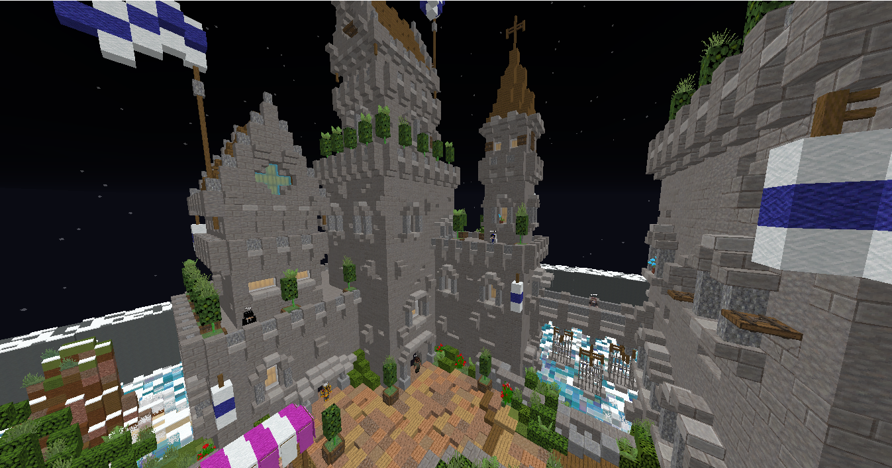

La Modalidad de SurvivalOP

¿Que es un SurvivalOP?
Un SurvivalOP, Es un Survival Extensible con Variedad de Cosas, Armaduras Mejoradas, Espadas Mejoradas, Picos Mejorados y Mas
¿Como puedo Jugarlo?
Para Jugar nuestro SurvivalOP tienes que Hacer estos pasos
1 Copiar la IP del Servidor DripXL.aternos.me
2 Añadirlo a tu lista de Servidores
3 Logearte/Registrarse y Tocar el NPC de SurvivalOP
4 Disfrutar el SurvivalOP
¿Como Consigo los Items OP?
Para conseguir los Items OP Puedes hacer estas maneras
1 Comprando/Consiguiendo Keys para Crates
2 Tradear con los Aldeanos del Lobby de SurvivalOP
¿Como puedo Conseguir Llaves para las Crates?
Existen algunas maneras
2 Con los Eventos del Servidor
3 El Servidor da muchas veces KeyAll (Keys para todos los Usuarios del Servidor)